Livestreaming
Your event on YouTube and Facebook as it happens, from three to six cameras, with the full recording afterwards.
Livestream · Live production · Media
Your event on YouTube and Facebook as it happens, from three to six cameras, with the full recording afterwards.
Remote speakers on the big screen, the room on the stream, and sound that works both ways.
Clear sound for the room and the stream, set up and run by our own crew. When it works, nobody notices.
Conferences, AGMs and launches covered end to end: cameras, sound, screens and the stream.
Streamed live by Sembule
What we produce
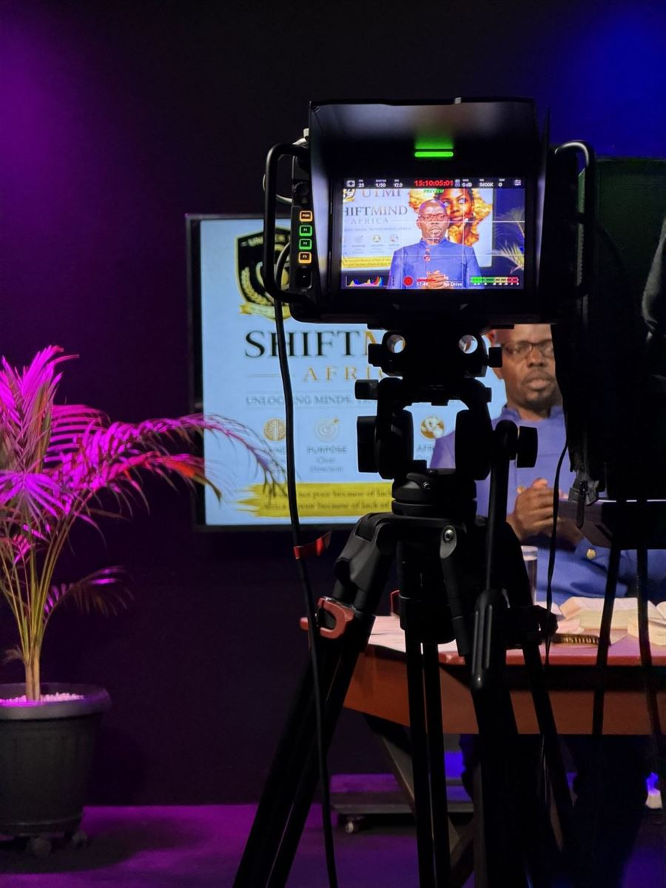
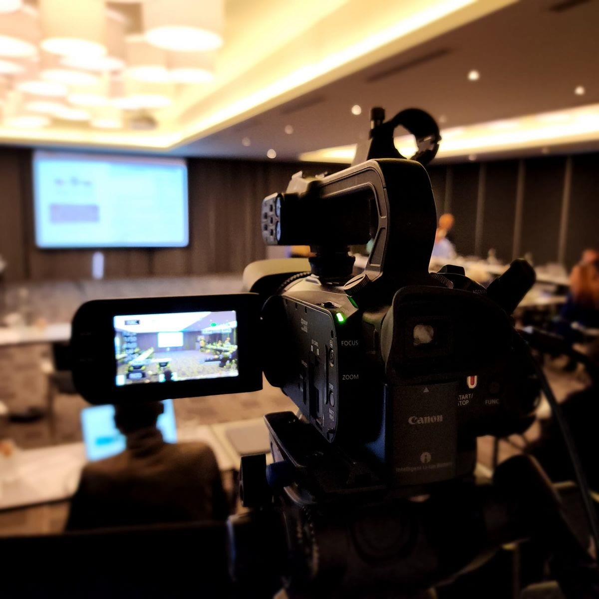
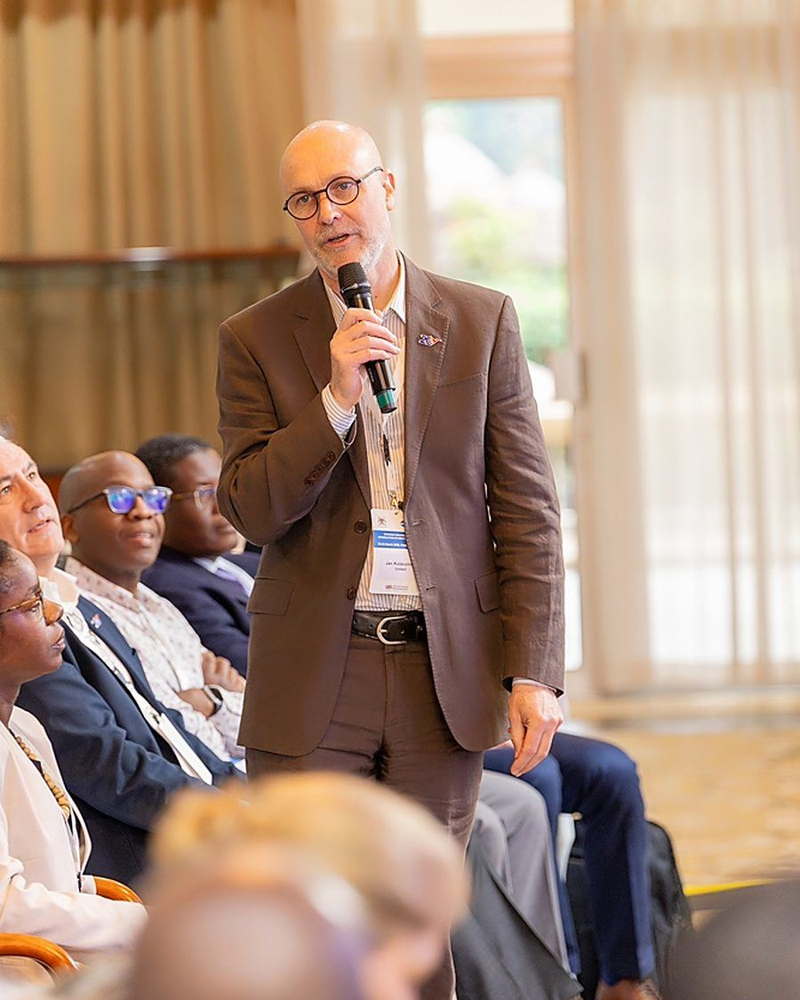
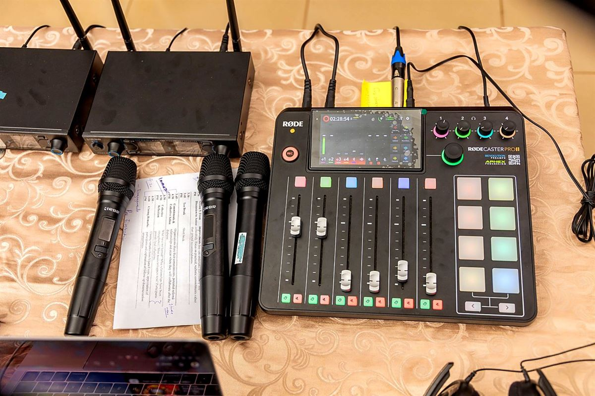
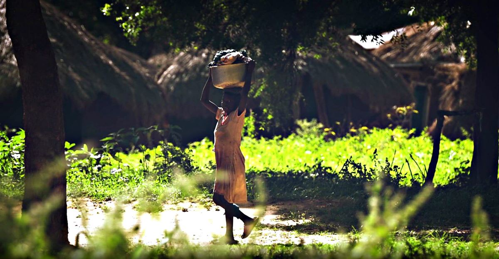
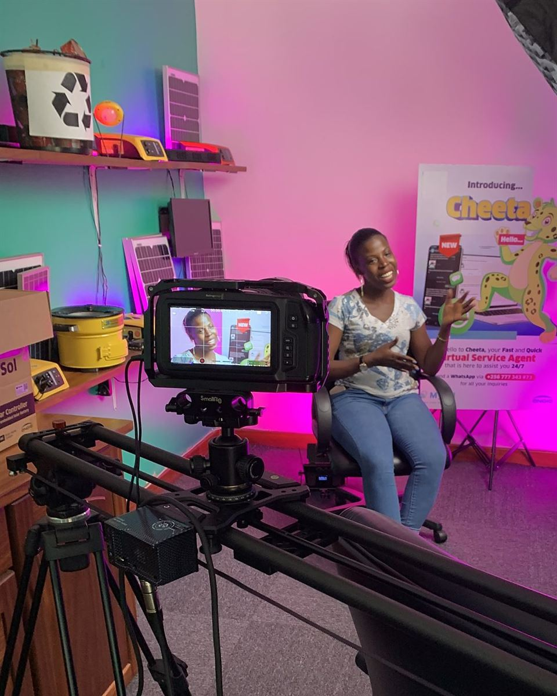
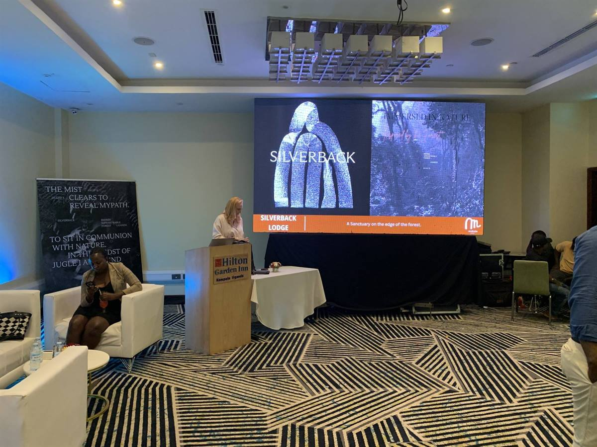
Showreel
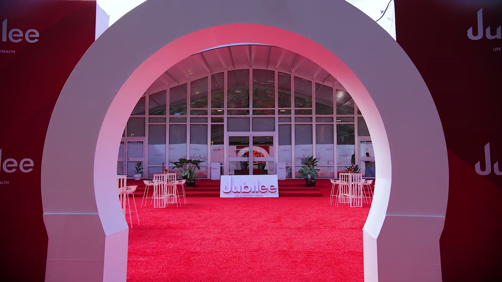
Selected work
Don’t take our word for it. Look at the rooms we’ve already worked in.
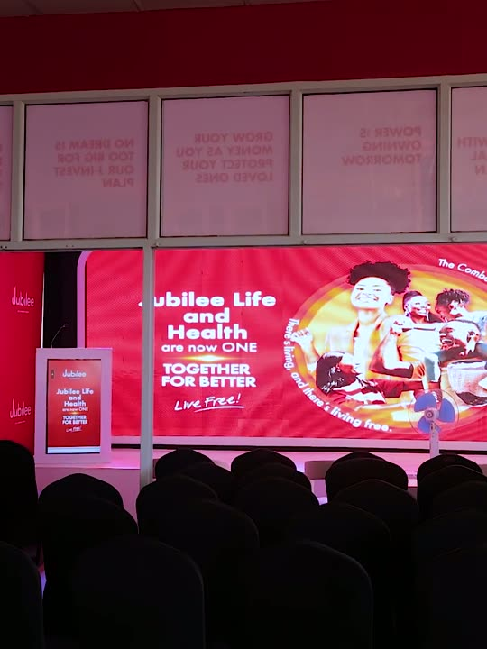
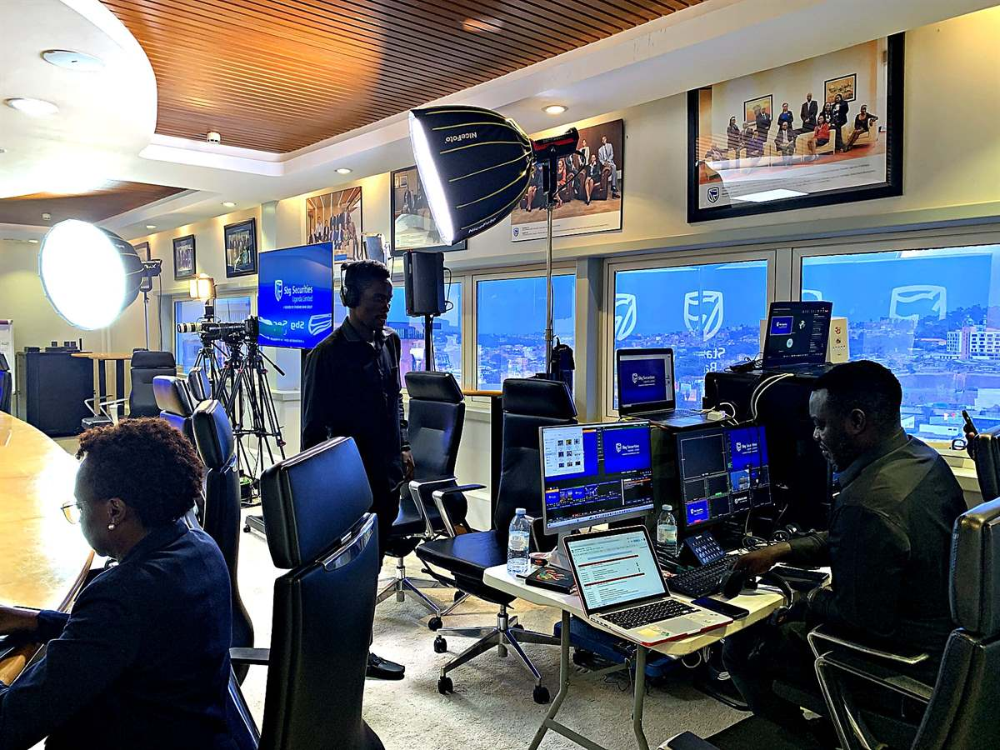
Sembule Media · Kampala, Uganda
Since 2022, Sembule Media has run cameras, streams, sound and screens for conferences, weddings and documentaries across Uganda. You look after your guests. We look after everything they see and hear.
Trusted by
Universities, ministries, banks and hotels have trusted us with days they couldn’t afford to get wrong.
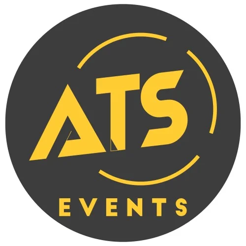
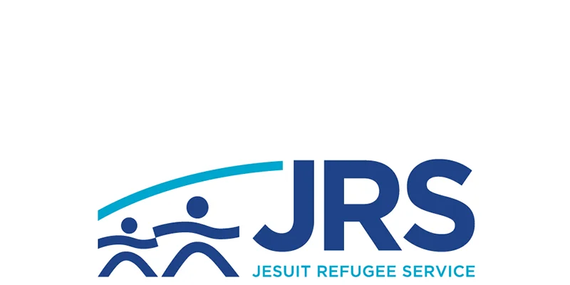
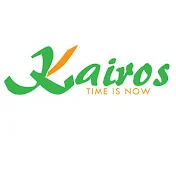
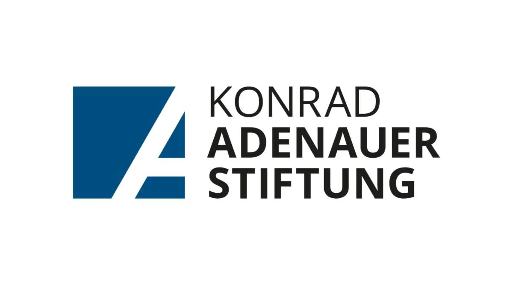
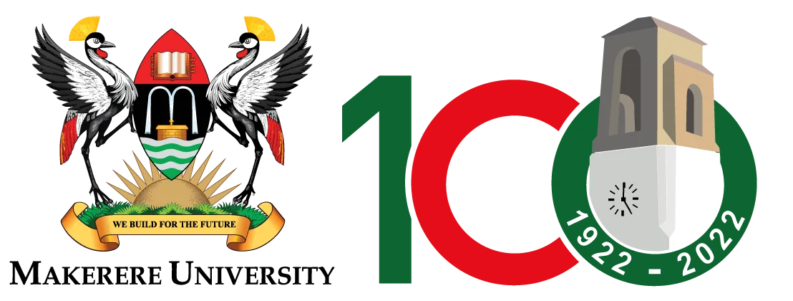
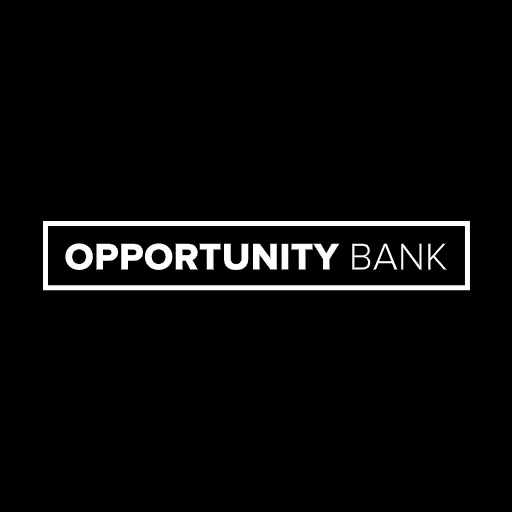
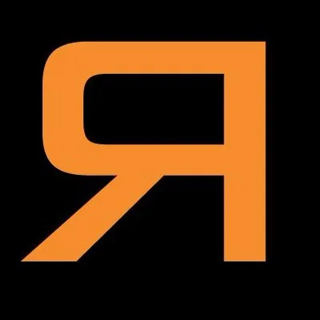
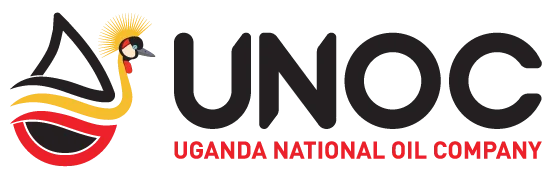
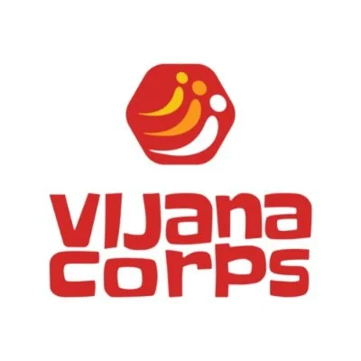
PartnersThe kit behind every stream.
In their words
Corporate teams, couples, churches and NGOs on what it was like to hand Sembule Media the day.
01/ 03
Approved client words will appear here once they are published from the Sembule OS.
Client name to confirm
Corporate event
Bookings open
Send the date and the venue. We’ll tell you if we’re available and what the room will need. No full brief required.
From AGMs on Zoom to concerts on YouTube: if it happens in a room, we can put it online.